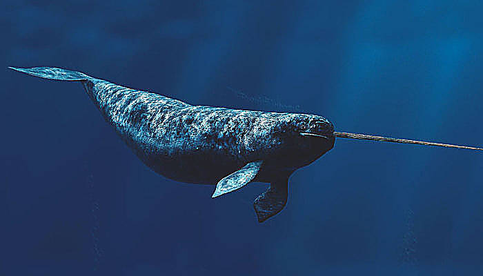

Los platanistoideos (Platanistoidea), conocidos vulgarmente como delfines de río (a diferencia de los delfínidos o delfines oceánicos), son una superfamilia de cetáceos odontocetos que tienen su hábitat en estuarios y cursos fluviales. Esta superfamilia se compone de dos familias.
Todos los platanistoideos presentan largos y finos hocicos. Su vista es muy limitada (en algunas especies, inexistentes), por lo que el sentido de la ecolocalización les resulta indispensable a la hora de alimentarse y nadar. Su aleta dorsal es poco desarrollada. Tal vez una de las características más llamativas es, al igual que en la familia Monodontidae, la capacidad de mover el cuello, a diferencia de los delfines oceánicos, que poseen las vértebras cervicales fusionadas.
Los delfines de río están entre los cetáceos más amenazados, a causa de la pérdida de su hábitat, la caza por humanos y su baja población intrínseca. Los delfines de río tienen visión muy limitada, e incluso a algunas especies puede considerárselas ciegas, lo que acentúa la posibilidad de encuentros infortunados con humanos u objetos peligrosos, incluyendo redes de pesca. Algunos delfines pueden utilizar ambos hábitats; el tucuxi por ejemplo, incluido taxonómicamente en la familia Delphinidae, vive igualmente en ríos u océanos.
Los delfines de río son miembros del infraorden Cetacea, los cuales son descendientes de mamíferos terrestres del orden de los artiodáctilos (artiodáctilos ungulados). Están relacionados con Indohyus, un género extinto de mamíferos artiodáctilos, a partir del cual se separaron hace aproximadamente 48 millones de años.2 Los primeros cetáceos primitivos, o arqueocetos, entraron al mar hace aproximadamente 49 millones de años y se volvieron totalmente acuáticos de 5 a 10 millones de años más tarde. No se tiene certeza sobre cuando los primeros delfines de río se aventuraron de nuevo al agua dulce.
El delfín de río se ha considerado una descripción taxonómica, lo que sugiere una relación evolutiva entre el grupo, aunque ahora se sabe que forman dos clados distintos. Los delfines de río son descendientes de antiguos linajes evolutivos que evolucionaron en ambientes de agua dulce.
|
|
|
|  |
|
|